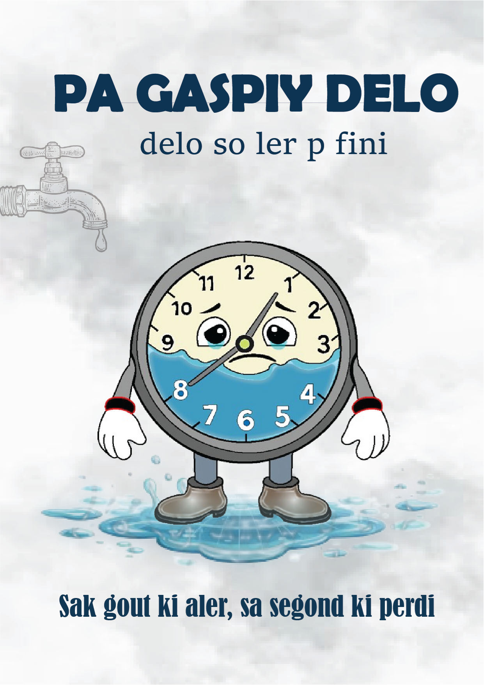
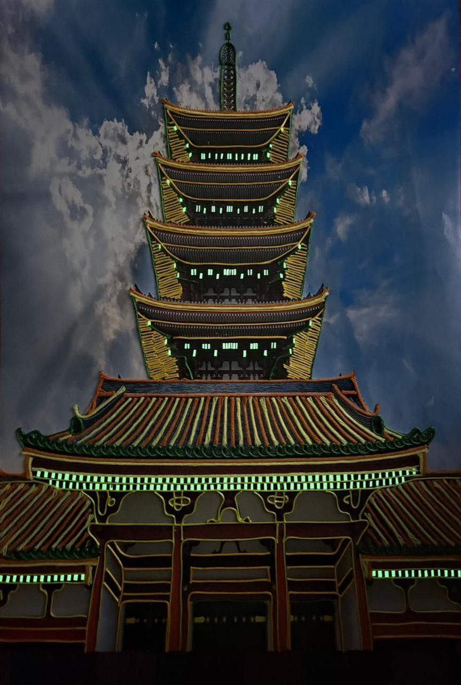
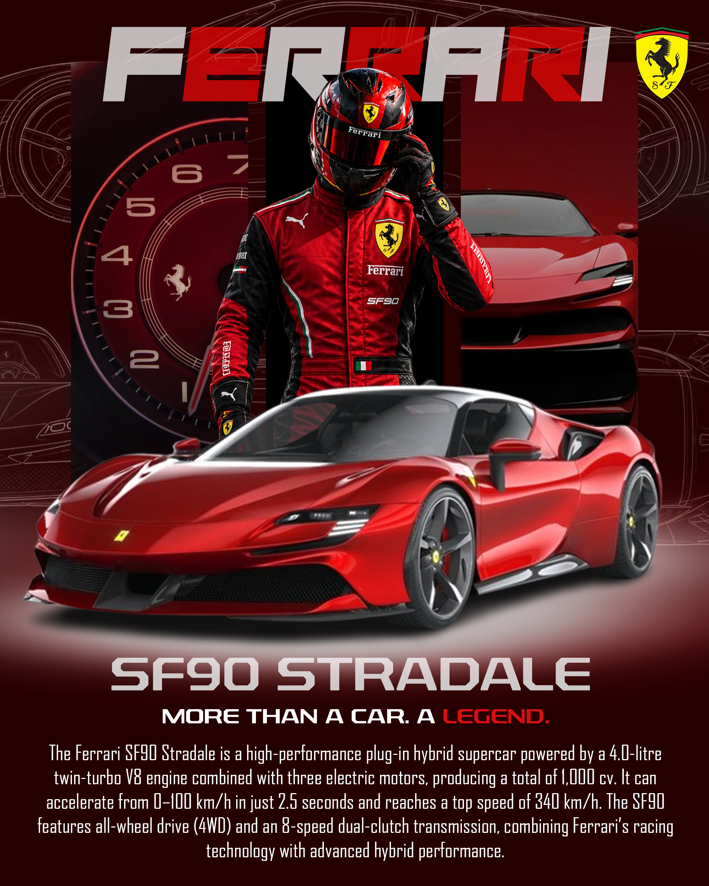
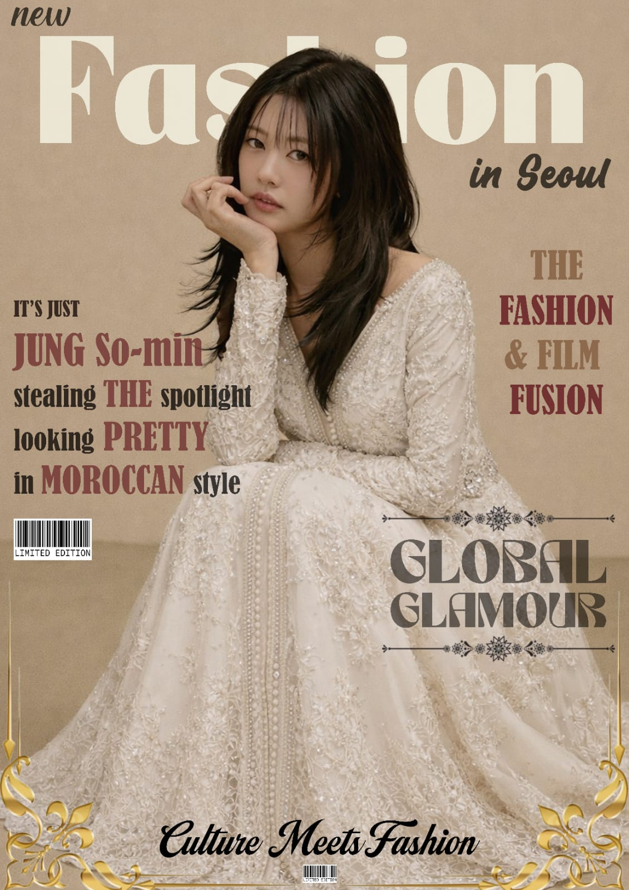

Project Title
SAVE WATER CAMPAIGN
Description:
This poster is a water conservation awareness advertisement created to encourage people to reduce unnecessary water wastage. The main slogan, “PA GASPIY DELO”, means “Don’t waste water.” The message “delo so ler p fini” communicates that water is a limited resource and may eventually run out if we continue wasting it. The main visual is a sad water mascot designed as a clock. The clock is filled partly with water, showing that time is running out for our water resources. The clock sad face and tears represent the consequences of water wastage. The water dripping from the tap and the puddle beneath the mascot emphasize the problem of wasting water. The bottom message, “Sak gout ki aler, sa segond ki perdi,” means that every drop that goes away is a second lost, is to connect water conservation with the idea of time.

Project Title
Mysterious Temples Lights Off
Description:
This artwork shows a traditional East Asian-style temple which is beautifully illuminated with green and warm golden lighting against a cloudy night sky. The contrast between the dark background and glowing green lights makes the building stand out as the main focal point. The artwork also creates a mysterious and dramatic atmosphere, while the symmetrical composition gives it a balanced and organized appearance.The artwork represents Hybrid aesthetic where the printed temple represents cultural heritage while the wool and fluorescent tape create this more urban side to it. By mixing digital imagery with tactile art, we are creating hybrid media. This digital-physical crossover can also be aligned with postmodern assemblage and pop-art sensibilities as it creates a link between traditional and contemporary design.

Project Title
Car brand poster
Description:
This poster is for the famous car brand “Ferrari”. The poster promotes the Ferrari SF90 Stradale, using a dark red and black colour scheme to represent Ferrari’s identity, speed, and power. The Ferrari logo and large typography create strong branding, while the “Racing Driver” and “Ferrari car” highlight the brand’s racing heritage and performance. The main title “SF90 STRADALE” identifies the car, while “MORE THAN A CAR. A LEGEND.” gives the poster an emotional and prestigious message. Technical details at the bottom emphasize the car’s power, speed, and hybrid technology. Overall, the poster has a sporty, luxurious, futuristic, and powerful visual style.

Project Title
Fashion Magazine
Description:
This poster is a Fashion Magazine Poster which is adverising a korean actress in a traditional arabic clothes.The idea was to introduce a new fashion design in the korean fashion industry. It showcase the "Jung Somin" wearing and white golden like abbaya. The "GLOBAL GLAMOUR" is to show that anyone can wear any traditional dress from an cultures around the world while respecting it.